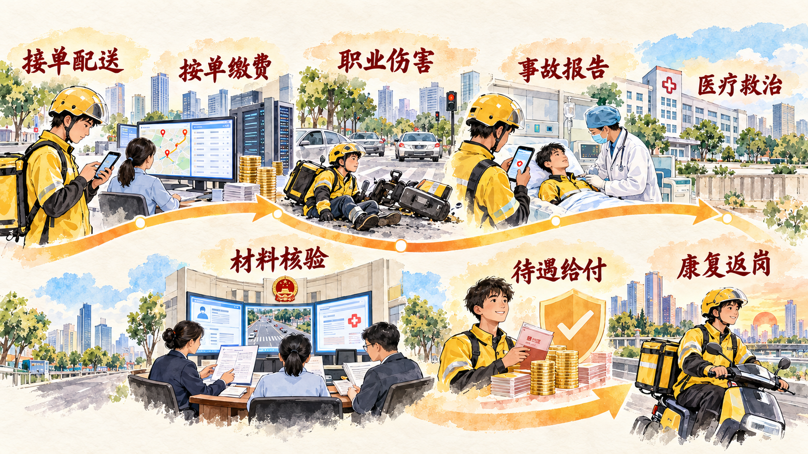
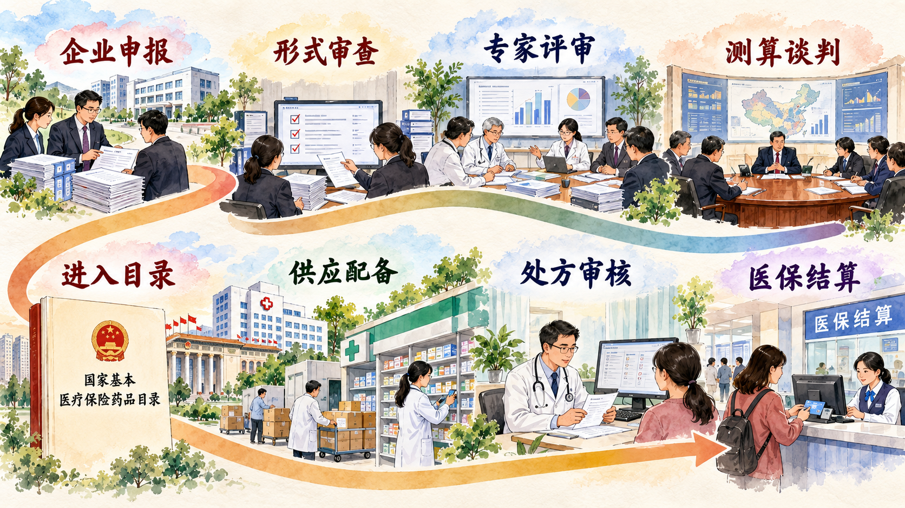
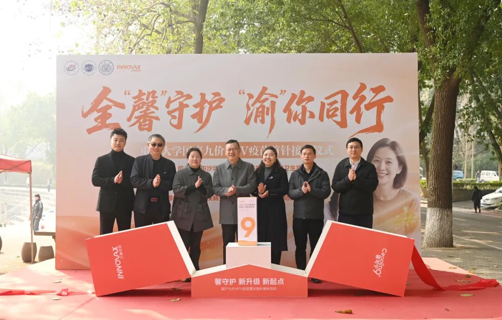
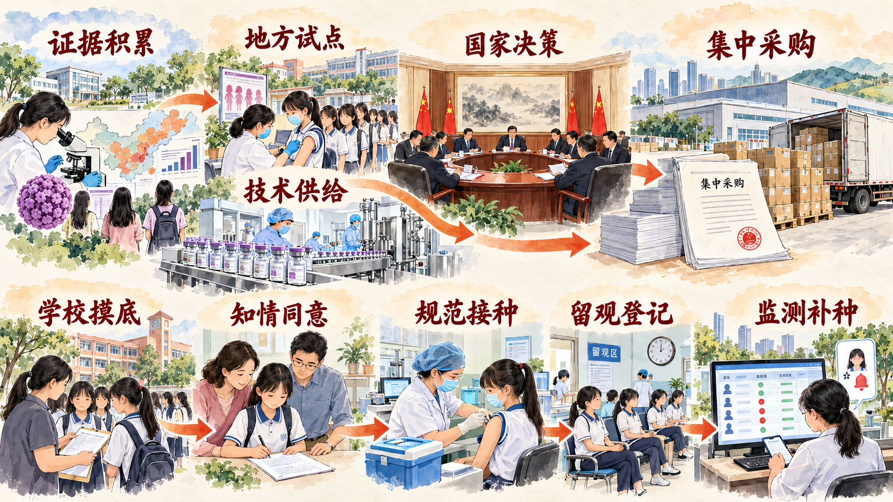

人民生活品质由多个制度环节共同形成。劳动者进入就业岗位，收入分配决定劳动成果怎样分享，社会保障分散人生风险，健康服务维护生命质量。一个环节出现堵点，常会传导到家庭消费、职业发展和社会预期。本节从四项制度出发，观察公共政策怎样进入一个人的生活过程。
一、完善分配制度
收入分配连接生产与生活。初次分配主要发生在劳动、资本、土地、知识、技术、管理和数据等生产要素参与生产的过程中，工资、经营收入和要素报酬在这一阶段形成。再分配由政府通过税收、社会保障和转移支付调节收入差距并保障基本公共服务。第三次分配以自愿公益慈善为主要形式，为扶危济困和公益事业补充社会资源。
完善分配制度重在形成机会公平、规则公平和结果合理的制度环境。提高劳动报酬在初次分配中的比重，需要提高就业质量、完善工资形成机制并保护劳动权益；健全再分配调节机制，需要使基本公共服务更加均衡可及；规范公益慈善，需要公开透明、依法运行。三次分配各有功能，共同服务全体人民共同富裕。
二、实施就业优先战略
就业是最基本的民生，也是劳动者进入社会生产、获得收入和实现发展的主要渠道。就业优先不仅关注岗位数量，也关注劳动条件、职业成长和权益保障。高校毕业生需要岗位供求信息、职业指导和技能训练，产业升级需要劳动者持续学习，新就业形态则要求社会保障制度适应按单工作、跨平台流动和工作时间分散等特点。
案例研究｜一张订单连接职业伤害保障
外卖骑手打开平台接单后，订单会记录接单时间、取餐地点、配送路线和完成状态。传统工伤保险通常以较稳定的劳动关系和按月缴费为基础，平台劳动却可能跨地区、跨平台并按单结算。骑手在配送途中发生交通事故时，首先面对医疗救治，随后还要证明事故发生在工作过程、确认由谁缴费并申请相应待遇。制度能否识别订单与事故之间的联系，直接影响保障能否及时到达。
职业伤害保障试点把平台订单转化为参保和核验接口。平台企业按照订单缴费，劳动者个人不缴费。骑手发生事故后，通过平台或规定渠道报告，订单数据帮助确认事故发生时是否处于执行任务状态；医疗记录、事故材料和平台数据共同进入核验，经办机构再按照规定处理医疗费用、伤残待遇和相关保障。按单记录适应人员流动和工作间断，平台缴费把经营组织者的责任接入公共制度。
2022 年试点首先在北京、上海、江苏、广东等 7 个省份和部分平台企业展开。2025 年 7 月，试点扩大到 17 个省份并增加平台企业；2026 年进一步扩展到全国 31 个省份和新疆生产建设兵团，出行、即时配送和同城货运平台企业总体纳入。到 2025 年底，累计参保人数超过 2400 万。扩围过程使订单数据标准、事故报告、资格核验和待遇给付逐步形成能够跨地区复制的制度流程。

讨论题
- 按订单记录和缴费适应了平台劳动的哪些特点？
- 订单数据、医疗材料和事故证明分别承担什么核验功能？
- 大学生从事平台兼职时，应当主动保存哪些工作和事故证据？
资料来源：人力资源社会保障部等部门关于扩大新就业形态人员职业伤害保障试点的文件；人力资源社会保障部 2026 年全国扩围材料。
参考资料｜职业伤害保障的制度接口
工伤保险形成于相对稳定的劳动关系，参保单位、工资基数、工作时间和工作场所比较明确。平台劳动具有按单工作、时间分散、跨区域流动和多平台接单等特点，事故是否发生在执行任务过程中，需要平台订单、定位轨迹、事故证明和医疗资料相互印证。
职业伤害保障以平台企业缴费、订单数据记录和社会保险经办为主要接口。平台掌握工作过程数据，经办机构负责资格确认和待遇支付，医疗机构提供诊疗记录，交通管理等部门提供事故材料。制度把分散信息连接起来，使风险保障能够适应新的就业组织方式。
资料来源：人力资源社会保障部新就业形态人员职业伤害保障试点政策材料。
三、健全社会保障体系
社会保障通过社会保险、社会救助、社会福利、慈善事业和优抚安置等制度安排，保障社会成员基本生活并分散风险。基本养老保险应对老年收入风险，基本医疗保险分担疾病费用，失业保险和工伤保险分别应对就业中断与职业伤害，最低生活保障和临时救助为困难群众提供兜底支持。
社会保障既要扩大覆盖，也要提高制度衔接和经办服务能力。人口流动要求参保关系能够转移接续，老龄化要求养老、医疗和长期照护相互配合，新药新技术进入临床则要求医保在临床价值、患者负担和基金承受能力之间形成科学支付机制。
案例研究｜替尔泊肽进入医保后的支付路径
替尔泊肽在社交平台常被称为“减重针”，药品说明书适应症、国家医保目录支付范围和患者个人使用目的却属于不同规则。2025 年国家医保目录把替尔泊肽新增纳入，限定支付范围为成人 2 型糖尿病患者在饮食和运动基础上，经二甲双胍和／或磺脲类药物治疗后血糖控制仍不佳。以减重为目的使用同一药品，并不自动进入该项医保支付范围。
药品进入目录以前，企业先提交药品基本信息、临床价值和经济性材料。形式审查确认申报资格，临床与药学专家评价安全性、有效性、创新性和临床需求，药物经济学与基金测算专家结合疾病负担、同类药价格和基金承受能力形成测算意见。进入现场谈判后，医保方与企业围绕支付标准和支付范围协商。2025 年共有 127 个目录外药品参加基本医保谈判或竞价，最终 114 种药品新增进入目录。
目录发布以后，患者还要经过药品供应和处方审核。医院或“双通道”药店需要完成配备，医生根据诊断和既往用药开具处方，医保结算系统核对支付范围。协议期内谈判药品执行全国统一医保支付标准，具体由基金和个人怎样分担，则由参保地待遇政策、药品分类、起付线、报销比例和就医机构共同决定。目录准入打开支付通道，实际结算由连续的制度环节共同完成。

讨论题
- 药品获批上市、进入医保目录和患者获得报销分别需要满足哪些条件？
- 替尔泊肽用于目录限定的糖尿病治疗和用于减重时，医保支付结果存在什么差别？
- 目录、支付标准、起付线和报销比例中，哪一个环节最容易被误解？
资料来源：国家医疗保障局《国家基本医疗保险、生育保险和工伤保险药品目录（2025 年）》；国家医保局 2025 年医保目录谈判和统计材料。
参考资料｜药品目录、支付标准与实际报销
一种药进入患者结算，需要依次经过药品监管部门批准上市、医保目录准入、限定支付范围确认、医院或“双通道”药店配备、医生处方和医保审核。国家谈判药品在协议期内执行全国统一医保支付标准，带“*”的支付标准属于保密信息，不向社会公开。
患者实际负担还受到参保地待遇政策影响。乙类药品可能先由个人承担一定比例，之后再进入统筹基金计算；起付线以下由个人负担，起付线以上按当地比例分担，并受年度最高支付限额等规则影响。因此，“进入医保”表示具备按规则支付的制度资格，结算金额需要结合患者诊断、用药条件、参保地和就医场景计算。
资料来源：国家医疗保障局 2025 年医保药品目录及政策解读。
新闻摘录｜失能照护进入全国制度建设
家庭成员失去独立进食、穿衣、移动或认知能力后，照护常常成为全天候任务。一名家属可能因此减少工作时间，家庭还要承担护理用品、上门服务和医疗护理费用。基本医疗保险主要支付符合规定的医疗费用，基本养老保险提供老年收入，长期持续的生活照护需要新的制度安排。
2026 年 3 月，中共中央办公厅、国务院办公厅印发意见，提出用 3 年左右时间基本建立覆盖全民、统筹城乡的长期护理保险制度。参保人员失能状态持续 6 个月以上，经统一标准评估认定后，可以按规定获得基本生活照料和与之密切相关的医疗护理服务。申请、失能评估、服务计划、机构或居家护理、结算和复评构成连续流程。
到 2026 年 9 月，22 个省份已发布省级实施方案，建制统筹地区达到 121 个。国家服务项目目录把翻身、进食、清洁等生活照护与部分医疗护理组织为 36 项服务。制度建设使家庭照护需求进入统一评估和专业服务体系，也带动护理人员培训、服务质量监管和经办结算逐步规范。
讨论题
- 直接提供护理服务与发放现金会形成哪些不同的照护效果？
- 失能评估为什么需要观察进食、穿衣、移动、认知和沟通等具体能力？
- 长期护理保险与基本养老保险、基本医疗保险可以怎样分工？
资料来源：中共中央办公厅、国务院办公厅《关于加快建立长期护理保险制度的意见》；国家医疗保障局和省级医保部门 2026 年政策材料。
新闻摘录｜医保药品比价进入手机端
同一种药在不同药店可能有不同价格。参保人在国家医保服务平台应用程序或地方医保小程序中输入药品名称，可以查看附近定点药店的公开价格、距离和部分库存信息，并筛选集采药品、医保目录药品。原本需要逐店询问的信息被汇集到手机界面，患者可以在医生或药师指导下比较规格、生产企业和价格。
公开比价也改变药店和监管部门掌握信息的方式。药店需要维护价格和库存数据，医保部门可以观察异常价差并加强定点协议管理，药品追溯码帮助识别药品来源和流通记录。参保人作出选择时，还要核对药品通用名、剂型、规格、生产企业和处方要求，不能只比较包装上的总价。
医保个人账户支付与统筹基金报销属于不同资金渠道。个人账户白名单允许参保人在定点药店使用本人账户支付规定范围内的药品和医疗器械，资金仍来自个人账户；统筹基金支付则按照目录、诊断、起付线和报销比例共同结算。手机比价把价格信息带到购买前，支付规则决定购买后的费用由谁承担。
讨论题
- 比较药品价格时，除总价以外还要核对哪些信息？
- 公开比价会怎样影响药店定价、患者选择和医保基金监管？
- 个人账户支付和统筹基金报销在资金来源与使用条件上有什么区别？
资料来源：国家医疗保障局医保药品比价和定点零售药店个人账户支付白名单政策材料，2026 年。
四、推进健康中国建设
人民健康是民族昌盛和国家强盛的重要标志。健康中国建设把工作重心由以治病为中心转向以人民健康为中心，贯通健康教育、疾病预防、诊断治疗和康复照护。政府、医疗卫生机构、学校、家庭和个人分别承担公共政策、专业服务、组织实施和健康责任。
案例研究｜HPV 疫苗进入国家免疫规划
宫颈癌主要与高危型人乳头瘤病毒持续感染有关。2022 年中国宫颈癌新发病例约 15.1 万例、死亡约 5.6 万例。疫苗可以在感染以前形成保护，筛查能够发现癌前病变，规范治疗可以阻断疾病进展。接种、筛查和治疗构成三级预防链条。把疫苗纳入国家免疫规划，意味着公共卫生政策把预防环节进一步向青少年阶段前移。
政策形成经历多个阶段。2021 年以后，多个省份和城市先后为适龄女孩提供免费 HPV 疫苗接种，疾控部门和学校在目标人群摸底、监护人知情同意、集中接种和漏种追踪中积累实施经验。2024 年约 40% 的适龄女孩可以获得地方免费接种政策，到 2025 年 5 月提高到约 60%。这一比例反映免费政策覆盖范围，完成首剂和全程接种的人数需要依据接种记录另行统计。
疫苗技术和供应能力也在变化。2019 年首个国产双价 HPV 疫苗获批，国内供应渠道逐步扩大。2025 年 5 月国产九价 HPV 疫苗获批，覆盖 HPV 6、11、16、18、31、33、45、52、58 型。国家免疫规划选择双价疫苗，针对与宫颈癌关系密切的 16、18 型，为目标年龄女孩提供基本公共卫生保障；四价、九价产品继续服务其他年龄和自愿自费需求。价次表示覆盖的病毒型别数量，不能脱离接种年龄、免疫程序、筛查和治疗条件单独评价公共卫生效果。

2025 年 10 月，国家疾控局等七部门印发通知，自 2025 年 11 月 10 日起，为 2011 年 11 月 10 日以后出生的满 13 周岁女孩免费接种 2 剂双价 HPV 疫苗，剂次间隔 6 个月。国家层面明确目标人群、免疫程序、采购和经费安排，省级疾控机构测算需求，教育部门和学校协助摸底动员，工业和信息化、药品监管等部门承担供应协调和质量监管。
政策进入学校和接种门诊后，每一个动作都有明确功能。学校协助核对出生日期和既往接种史，向监护人发放告知材料；监护人完成知情同意；接种人员进行身份核对、健康询问和禁忌核查；疫苗扫码登记后实施接种，受种者留观 30 分钟。信息系统按月分析首剂和全程接种情况，形成漏种名单，由学校和接种单位继续提醒。国家决策通过采购、组织、操作和监测转化为一个个可完成、可追踪的接种过程。

免费政策与自费接种同时存在。国家免疫规划目标人群免费接种双价疫苗，其他年龄和价次按照产品说明书自愿自费接种。自费价格没有全国统一零售价。2026 年地方官方清单显示，济阳区国产双价为 361 元／剂、进口四价为 830 元／剂、进口九价为 1330 元／剂；福建清流县国产九价为 499 元／剂。价格比较需要同时注明地区、时间、产品、剂次和服务费口径。
讨论题
- HPV 疫苗进入国家免疫规划需要同时具备哪些疾病、技术、供应、财政和组织条件？
- 学校摸底、监护人知情同意、接种门诊操作和信息系统监测分别解决什么问题？
- 免费双价疫苗和自费九价疫苗并存时，公共政策怎样兼顾基本保障和多样化需要？
资料来源：国家疾控局等七部门《关于将人乳头瘤病毒疫苗纳入国家免疫规划有关工作事宜的通知》，2025 年 10 月；中国疾病预防控制中心《国家免疫规划人乳头瘤病毒疫苗免疫程序及实施技术方案》；国家卫生健康委宫颈癌防治发布材料；国家药品监督管理部门国产 HPV 疫苗批准材料；济阳区、福建清流县 2026 年非免疫规划疫苗价格清单。
参考资料｜HPV 疫苗与宫颈癌三级预防
双价、四价和九价描述疫苗覆盖的 HPV 型别数量。国家免疫规划使用的双价疫苗覆盖 HPV 16、18 型，这两种高危型同多数宫颈癌发生密切相关；四价产品在此基础上增加 HPV 6、11 型；九价产品进一步覆盖 31、33、45、52、58 型。具体适用年龄、剂次和禁忌以获批说明书和免疫程序为准。
一级预防通过健康教育和 HPV 疫苗接种降低感染风险，二级预防通过宫颈癌筛查发现高危感染和癌前病变，三级预防通过规范诊断、治疗和康复降低疾病危害。疫苗接种不能代替成年后的宫颈癌筛查，筛查异常也需要进入规范诊疗。三道防线共同构成宫颈癌综合防控体系。
资料来源：国家卫生健康委《加速消除宫颈癌行动计划（2023—2030 年）》；国家疾控局 HPV 疫苗免疫程序及技术问答。